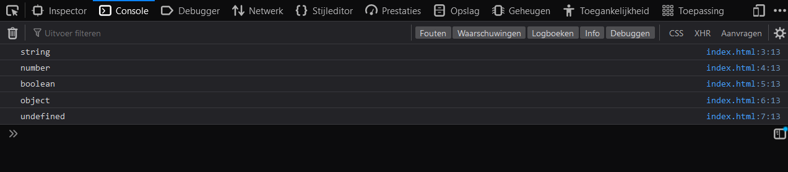

Introduction 
In this course you will be learning about the basics of JavaScript.
Lesson 1 - Console and Comments (L1)
In this lesson you will learn how to use the console to print messages to the console and how to use comments in javascript.
Lesson 1 - Console and Comments (L1)
Console
The console is a tool that is used to debug javascript code. It is also used to print messages to the console. There are several functions that can be used to print messages to the console. In this lesson we will be covering the most commonly used functions.
console.log
The console.log function is used to print a log message to the console.
The log message can be a string, number, boolean, or object.
We will be covering different kinds of data types in a later lesson.
To print a log message to the console with the text "Log message", you can use the following syntax:
console.log("Log message");
console.info
The console.info function is used to print an info message to the console.
To print an info message to the console with the text "Info message", you can use the following syntax:
console.info("Info message");
console.warn
The console.warn function is used to print a warning message to the console.
To print a warning message to the console with the text "Warning message", you can use the following syntax:
console.warn("Warning message");
console.error
The console.error function is used to print an error message to the console.
This function is commonly used to print errors to the console.
We will be covering errors in a later lesson.
To print an error message to the console with the text "Error message", you can use the following syntax:
console.error("Error message");
Comments
Comments are used to add notes to your code. They are not executed by the javascript engine. Comments are useful for adding notes to your code and for temporarily disabling code.
There are two types of comments in javascript:
- Single line comments
- Multi line comments
Single line comments
Single line comments are used to add a single line of comments to your code. To add a single line comment, you can use the following syntax:
// This is a single line comment
Multi line comments
Multi line comments are used to add multiple lines of comments to your code. To add a multi line comment, you can use the following syntax:
/*
This
is a
multi line
comment
*/
Lesson 1 - Console and Comments (L1)
Task L1.1 - Hello World
In this task you will write a javascript script that prints "Hello World" to the console. To set up the environment, you will need to create a folder called hello-world and add the code below in a file called index.html. The name of the folder and the file can be anything you want, but for the sake of this tutorial, we will use the names mentioned above.
<!DOCTYPE html>
<html lang="en">
<head>
<script src="index.js"></script>
</head>
<body></body>
</html>
In this course we will not be going into detail about HTML, but for now, you can think of it as a container for your javascript code. The script tag in the head section of the HTML file will load the javascript code from the index.js file.
Next you will need to create the index.js file and log the message "Hello World" to the console. To run the code, open the index.html file in your browser. To view the console, press F12 and select the console tab in the developer tools window.
This is what your console should look like (Your dev tools window may look different):

Task L1.2 - Console functions
In this task you will learn how to use the console.log, console.info, console.warn, and console.error functions. To set up the environment, you will need to create a folder called console-functions and create a file called index.js. You can use the same index.html file from the previous task.
Next log 4 different messages to the console using the console.log, console.info, console.warn, and console.error functions. Add meaningful comments to your code to explain what each function does.
This is what your console should look like (Your text may be different):

Notice the difference between the log, info, warn, and error messages.
If you are interested in learning more about console functions, you can read the documentation here: https://developer.mozilla.org/en-US/docs/Web/API/Console
Lesson 2 - Data Types (L2)
In this lesson you will learn about the different data types in JavaScript. You will learn how to use the different data types and how to convert between them.
Lesson 2 - Data Types (L2)
In JavaScript there is no need to declare a variable’s data type, as it is automatically assigned when the variable is initialized. This means that the same variable can be used to hold different data types, and the data type can change during the execution of a program. Even though JavaScript is a loosely typed language - meaning that you don’t have to declare the data type of a variable - , it is still a good idea to be aware of the different data types and how they behave.
What is a data type?
In programming, a data type is a classification of data which tells the compiler or interpreter how the programmer intends to use the data. For example, an integer is a data type that can only hold whole numbers, while a string is a data type that can hold a sequence of characters.
What are the different data types?
There are 7 basic data types in JavaScript:
- Number - Any number, including numbers with decimals:
4,8,1516,23.42. - String - Any grouping of characters on your keyboard (letters, numbers, spaces, symbols, etc.) surrounded by single quotes:
' ... 'or double quotes" ... ". Though we prefer double quotes. Some people like to think of string as a fancy word for text. - Boolean - This data type only has two possible values— either
trueorfalse(without quotes). It’s helpful to think of booleans as on and off switches or as the answers to a “yes” or “no” question. - Null - This data type represents the intentional absence of a value, and is represented by the keyword
null(without quotes). - Undefined - This data type is denoted by the keyword
undefined(without quotes). It also represents the absence of a value though it has a different use thannull. - Symbol - A newer feature to the language, symbols are unique identifiers, useful in more complex coding. No need to worry about these for now.
- BigInt - Used to represent integers with arbitrary precision. See the MDN documentation for an example.
In this course, we will primarily be working with the first 5 data types.
What is the difference between undefined and null?
undefined and null both represent the absence of a meaningful value.
undefined is a variable that has been declared but not assigned a value.
null is an assignment value.
It can be assigned to a variable as a representation of no value.
How do you log a variable’s data type?
To find out the data type of a variable, you can use the typeof operator.
The typeof operator returns a string with the data type name.
For example, if you were to log the data type of the number 42, you would get the string "number".
The following code logs the data type of the number 42 to the console:
console.log(typeof 42); // Output: "number"
The typeof operator can be used on any variable, including variables that hold other data types.
Lesson 2 - Data Types (L2)
Taks L2.1 - Data Types
In this task you will learn about the different data types in javascript. To set up the environment, you will need to create a folder called data-types and create a file called index.js. You can use the same index.html file from the previous lesson.
Next, log the following data types with the following values to the console:
- string
"Hello World" - number
42 - boolean
true - null
- undefined
The output should look like this in the console:

Notice that the data types are logged in different colors. This is because the console uses different colors to distinguish between different data types.
Task L2.2 - typeof
In this task you will learn about the typeof operator.
To set up the environment, you will need to create a folder called typeof and create a file called index.js. You can use the same index.html file from the previous task.
Next, log the following data types of the following values to the console:
- string
"Hello World" - number
42 - boolean
true - null
- undefined
The output should look like this in the console: 
Notice that typeof null returns object.
This is a bug in javascript that has been around for a long time and will probably never be fixed.
It is not a bug in the typeof operator, but in the way that the null value is implemented.
Lesson 3 - Operators (L3)
In this lesson you will learn about operators in JavaScript and how to use them in your code. JavaScript has the following types of operators.
- Arithmetic Operators
- Assignment Operators
- Comparison Operators
- Logical Operators
- Type Operators
- Bitwise Operators
We will only cover the first 5 types of operators in this course. Assignment operators are covered in the next lesson. The last type of operators are not necessary to learn for this course.
Lesson 3 - Operators (L3)
Arithmetic Operators
There are 8 arithmetic operators in JavaScript. These operators are used to perform arithmetic on numbers (literals or variables). The following table lists the arithmetic operators in JavaScript.
| Operator | Description |
|---|---|
| + | Addition |
| - | Subtraction |
| * | Multiplication |
| ** | Exponentiation |
| / | Division |
| % | Modulus |
| ++ | Increment |
| -- | Decrement |
Examples
5 + 5 // 10
5 - 5 // 0
5 * 5 // 25
5 ** 5 // 3125 (5 * 5 * 5 * 5 * 5)
5 / 5 // 1
5 % 5 // 0 (5 / 5 = 1 remainder 0)
- The exponentiation operator returns the result of raising the first operand to the power of the second operand.
- The modulus operator returns the remainder of a division operation.
String Concatenation
The addition operator can also be used to concatenate strings and numbers.
"Hello" + " " + "World" // "Hello World"
"Hello" + " " + 42 // "Hello 42"
We will cover the increment and decrement operators in the next lesson.
Comparison Operators
There are 9 comparison operators in JavaScript.
| Operator | Description |
|---|---|
| == | Equal to |
| === | Equal value and equal type |
| != | Not equal |
| !== | Not equal value or not equal type |
| > | Greater than |
| < | Less than |
| >= | Greater than or equal to |
| <= | Less than or equal to |
| ? | Ternary operator |
Examples
5 == 5 // true
5 == "5" // true
5 === 5 // true (5 is equal to 5)
5 === "5" // false (5 is not equal to "5")
5 != 5 // false
5 != "5" // false
5 !== 5 // false (5 is equal to 5)
5 !== "5" // true (5 is not equal to "5")
5 > 5 // false
5 > 10 // false
10 > 5 // true
5 < 5 // false
5 < 10 // true
10 < 5 // false
5 >= 5 // true (5 is equal to 5)
5 >= 10 // false (5 is not greater than or equal to 10)
10 >= 5 // true (10 is greater than 5)
- The equality operators (== and ===) return true if the operands are equal.
- The inequality operators (!= and !==) return true if the operands are not equal.
- The greater than operator (>) returns true if the left operand is greater than the right operand.
- The less than operator (<) returns true if the left operand is less than the right operand.
- The greater than or equal to operator (>=) returns true if the left operand is greater than or equal to the right operand.
- The less than or equal to operator (<=) returns true if the left operand is less than or equal to the right operand.
We will cover the ternary operator in the next lesson.
Logical Operators
There are 3 logical operators in JavaScript.
| Operator | Description |
|---|---|
| && | And |
| || | Or |
| ! | Not |
Examples
true && true // true
true && false // false
false && true // false
false && false // false
true || true // true
true || false // true
false || true // true
false || false // false
!true // false
!false // true
- The logical and operator (&&) returns true if both operands are true.
- The logical or operator (||) returns true if one of the operands is true.
- The logical not operator (!) returns the opposite of its operand.
Type Operators
There are 2 type operators in JavaScript.
| Operator | Description |
|---|---|
| typeof | Returns the type of a variable |
| instanceof | Returns true if an object is an instance of an object type |
The instanceof operator is used to check the type of object. This operator is covered in another course, you do not need to worry about it for now. We have already covered the typeof operator in the previous lesson, but we will show it one more time in the code-block below.
Examples
typeof 5 // "number"
typeof "5" // "string"
typeof true // "boolean"
typeof undefined // "undefined"
typeof null // "object"
Lesson 3 - Operators (L3)
To set up the environment for the tasks, you will need to create a folder called operators and create a file called index.js. You can use the same index.html file from the first lesson.
Task L3.1 - Arithmetic Operators
In this task you will learn how to use arithmetic operators.
Order of Operations
In maths, the order of operations is a set of rules that define the order in which operations are performed when evaluating an expression. The order of operations is important because it determines the result of an expression.
The order of operations is as follows:
- Parentheses
- Exponents, Roots
- Multiplication, Division, Modulus
- Addition, Subtraction
First, write down the result of the following expressions on paper:
2 + 23 - 14 * 28 / 22 ** 35 % 22 + 3 * 4(2 + 3) * 42 + 3 * 4 - 62 + 3 * (4 - 6)
Now, write a JavaScript program that will log the result of the following expressions to the console. When you are done, check your results with the ones you wrote down on paper. Are they the same?
Task L3.2 - String Concatenation
In this task you will learn how to use string concatenation.
Write a JavaScript program that will log the following string to the console (use string concatenation with the + operator):
Hello, my name is John Doe.
Next, write a JavaScript program that will log the following string to the console (The age can not be a string, it must be a number):
Hello, my name is John Doe. I am 30 years old.
Task L3.3 - Comparison Operators
In this task you will learn how to use comparison operators.
First, write down the result of the following expressions on paper:
2 > 15 < 32 >= 25 >= 13 <= 46 <= 22 == 22 == "2"2 != 22 == "2"2 === 22 === "2"2 !== 22 !== "2"
Now, write a JavaScript program that will log the result of the following expressions to the console. When you are done, check your results with the ones you wrote down on paper. Are they the same?
Task L3.4 - Logical Operators
In this task you will learn how to use logical operators.
First, write down the result of the following expressions on paper:
true && truetrue && falsefalse && truefalse && falsetrue || truetrue || falsefalse || truefalse || false!true!false
Now, write a JavaScript program that will log the result of the following expressions to the console. When you are done, check your results with the ones you wrote down on paper. Are they the same?
Task L3.5 - Logical Operators with Comparison Operators
In this task you will learn how to use logical operators with comparison operators.
First, write down the result of the following expressions on paper:
2 > 1 && 3 > 22 > 1 && 3 < 22 > 1 || 3 < 22 < 1 || 3 < 2!(2 < 1)!(2 > 1)!(2 < 1) && !(3 < 2)!(2 < 1) || !(3 < 2)
Now, write a JavaScript program that will log the result of the following expressions to the console. When you are done, check your results with the ones you wrote down on paper. Are they the same?
Lesson 4 - Variables (L4)
In this lesson you will learn about variables, which are used to store data.
Lesson 4 - Variables (L4)
Lesson 5 - Var, Let and Const (L5)
In this lesson you will learn about the different ways to declare variables in JavaScript and the differences between them.
Lesson 5 - Var, Let and Const (L5)
Lesson 6 - Dates (L6)
In this lesson you will learn how to work with dates in JavaScript. You will learn how to create a date object, how to get the current date and time, how to get the year, month, day, hour, minute, second, and millisecond from a date object, and how to format a date object.
Lesson 6 - Dates (L6)
Lesson 7 - Arrays (L7)
In this lesson you will learn about arrays, which are a way to store multiple values in a single variable.
You will learn how to create arrays, how to access their values, and how to modify them.
You will also learn about the length property, which is used to find out how many values are in an array.
Lesson 7 - Arrays (L7)
Lesson 8 - Conditional Statements (L8)
In this lesson you will learn how to use conditional statements in JavaScript.
You will learn how to use the if statement, the else statement, the else if statement, and the switch statement.
Lesson 8 - Conditional Statements (L8)
Lesson 9 - Loops (L9)
In this lesson you will learn about loops.
Loops are a way to repeat a block of code multiple times.
There are two types of loops in JavaScript: for loops and while loops.
You will learn about both of them in this lesson.
Lesson 9 - Loops (L9)
Lesson 10 - Functions (L10)
In this lesson you will learn about functions, which are a way to group code together and reuse it.
You will also learn about the arguments object, which is a special object that is available inside functions.
Lesson 10 - Functions (L10)
Lesson 11 - Arrow Functions (L11)
In this lesson you will learn about arrow functions, which are a new way to write functions in JavaScript. They are a shorter syntax for writing functions, and they have some other advantages as well. We will be talking about advantages and disadvantages of arrow functions, and when you should use them.
Lesson 11 - Arrow Functions (L11)
Lesson 12 - Error Handling (L12)
In this lesson you will learn how to handle errors in your code.
You will learn how to use the try/catch/finally syntax to handle errors.
You will also learn how to use the Error object to create and throw your own errors.
Lesson 12 - Error Handling (L12)
Lesson 13 - Promises (L13)
In this lesson you will learn about promises. Promises are a way to handle asynchronous code in a more elegant way than callbacks. You will learn how to create a promise, how to resolve it, and how to handle errors. You will also learn how to create asynchronous functions and when to use them.
Lesson 13 - Promises (L13)
Lesson 14 - Events (L14)
In this lesson you will learn about events and how to use them in your code. Events are a way to communicate between different parts of your code. They are a very powerful tool that can be used to make your code more modular and easier to maintain. In this lesson we will only cover DOM events like button clicks, but there are many other types of events that you can use in your code.
Lesson 14 - Events (L14)
Lesson 15 - Objects (L15)
In this lesson you will learn about objects, which are a way to store data in a structured way.
You will learn how to create objects, how to access their properties, and how to modify them.
You will also learn how to create objects with methods, and how to use the this keyword to access the object's properties and methods.